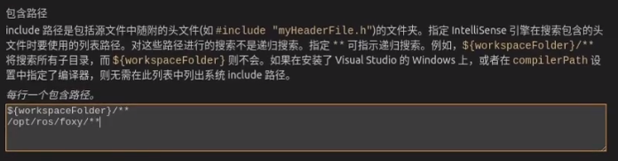
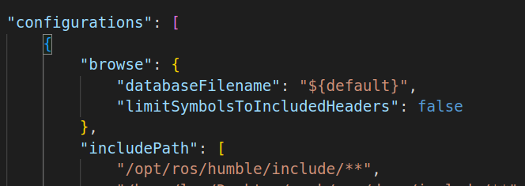

写一个节点
解决VSCODE找不到头文件
- 在C++ configuration里面手动添加rcl的路径

添加完成后在.json中可以看见

创建功能包和节点
1.使用CLI创建功能包
ros2 pkg create demo1 --build-type (ament_cmake)可省略 --dependencies rclcpp
2.在功能包的src文件手动创建节点的cpp文件
3.在CMakeLists.txt最后添加如下代码
1
2
3
4
5
6
7
8
9
10
11
12
| add_executable(demo_node src/demo.cpp)
ament_target_dependencies(demo_node rclcpp)
add_executable(demo_oop_node src/demo_oop.cpp)
ament_target_dependencies(demo_oop_node rclcpp)
install(TARGETS
demo_node
demo_oop_node
DESTINATION lib/${PROJECT_NAME}
)
|
其中add_executable()创建的那个可执行文件，就是节点
如何写一个节点中的程序
1
2
3
4
5
6
7
8
9
10
11
12
13
14
| #include "rclcpp/rclcpp.hpp"
int main(int argc,char** argv)
{
rclcpp::init(argc, argv);
auto node = std::make_shared < rclcpp::Node > ("demo_test");
RCLCPP_INFO(node->get_logger(), "demo1111");
rclcpp::spin(node);
rclcpp::shutdown();
}
|
通常使用面向对象的思想，自己重写个节点类，继承rclcpp::Node然后再该类里面写东西
1
2
3
4
5
6
7
8
9
10
11
12
13
14
15
16
17
18
| #include "rclcpp/rclcpp.hpp"
class mynode : public rclcpp::Node
{
public:
mynode(std::string name):Node(name)
{
RCLCPP_INFO(this->get_logger(),name.c_str());
}
};
int main(int argc,char** argv)
{
rclcpp::init(argc, argv);
auto node = std::make_shared < mynode > ("demo_test");
rclcpp::spin(node);
rclcpp::shutdown();
}
|